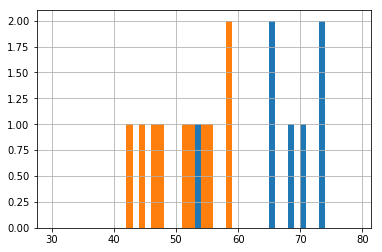
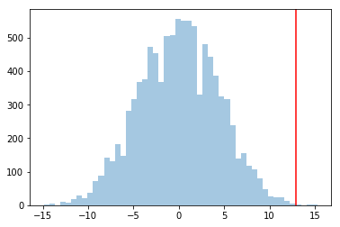
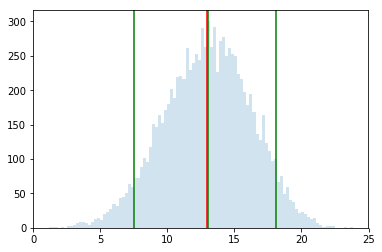

# The %... is an iPython thing, and is not part of the Python language.
# In this case we're just telling the plotting library to draw things on
# the notebook, instead of on a separate window.
%matplotlib inline
#this line above prepares IPython notebook for working with matplotlib
# See all the "as ..." contructs? They're just aliasing the package names.
# That way we can call methods like plt.plot() instead of matplotlib.pyplot.plot().
import numpy as np # imports a fast numerical programming library
import scipy as sp #imports stats functions, amongst other things
import matplotlib as mpl # this actually imports matplotlib
import matplotlib.cm as cm #allows us easy access to colormaps
import matplotlib.pyplot as plt #sets up plotting under plt
import pandas as pd #lets us handle data as dataframes
#sets up pandas table display
pd.set_option('display.width', 500)
pd.set_option('display.max_columns', 100)
pd.set_option('display.notebook_repr_html', True)The Significance and Size of Effects
When a drug works, how much does it matter?
statistics
regression
Explores significance testing and effect size using a drug vs. placebo experiment. Demonstrates permutation tests, bootstrap confidence intervals, and Cohen’s d as complementary tools for evaluating treatment effects.
Let us get the data and put it into a dataframe.
placebo = [54, 51, 58, 44, 55, 52, 42, 47, 58, 46]
drug = [54, 73, 53, 70, 73, 68, 52, 65, 65]
dosage = placebo + drug
label = ['P']*len(placebo) + ['D']*len(drug)
df = pd.DataFrame(dict(dosage=dosage, label=label))
df| dosage | label | |
|---|---|---|
| 0 | 54 | P |
| 1 | 51 | P |
| 2 | 58 | P |
| 3 | 44 | P |
| 4 | 55 | P |
| 5 | 52 | P |
| 6 | 42 | P |
| 7 | 47 | P |
| 8 | 58 | P |
| 9 | 46 | P |
| 10 | 54 | D |
| 11 | 73 | D |
| 12 | 53 | D |
| 13 | 70 | D |
| 14 | 73 | D |
| 15 | 68 | D |
| 16 | 52 | D |
| 17 | 65 | D |
| 18 | 65 | D |
The “mean” size of the effect in our sample is about 13.
actuals = df.groupby('label').dosage.mean()
actualslabel
D 63.666667
P 50.700000
Name: dosage, dtype: float64df.groupby('label').dosage.hist(bins=np.arange(30, 80, 1));
actual_effect = actuals['D'] - actuals['P']
actual_effect12.966666666666661Permutations to get significance
Could it have happened by chance?
We permute, group-by labels again, and calculate the effect. This kind of randomization should “kill” the effect:
temp = np.random.permutation(df.label)temp_series = df.groupby(temp).dosage.mean()
temp_seriesD 57.0
P 56.7
Name: dosage, dtype: float64temp_series['D'] - temp_series['P']0.29999999999999716If we compare the distribution of effect sizes to the actual effect, this actual effect should be in a tail if it is significant…
sig_means = np.zeros(10000)
for i in range(10000):
temp = np.random.permutation(df.label)
mean_series = df.groupby(temp).dosage.mean()
sig_means[i] = mean_series['D'] - mean_series['P']plt.hist(sig_means, bins=50, alpha=0.4);
plt.axvline(actual_effect, 0, 1, color="red");
As a comparison, consider the case in which placebos had a much wider spread, between 50, and 450. Simply add 13 to each placebo value to get a dosage value. The mean difference would still be 13. But now, 13 would be way inside the histogram, and the effect would not be a significant one, and could have happened by chance.
Statistically significant does not mean important. Thats a question of, how large is the effect, or where are the confidence intervals for the effect. For instance, if a statistically significant increase in mortality was a mean of 5 days over 5 years by drug over placebo, you would not consider the effect important.
Bootstrap to estimate size of effect
Here we randomize labels within the group, take means, and subtract. Here is an example
placebo_bs = np.random.choice(list(range(10)), size=(10000, 10))
drug_bs = np.random.choice(list(range(10, 19)), size=(10000, 9))placebo_bs[0,:]array([7, 7, 1, 5, 1, 5, 4, 6, 0, 7])df.iloc[placebo_bs[0,:]]| dosage | label | |
|---|---|---|
| 7 | 47 | P |
| 7 | 47 | P |
| 1 | 51 | P |
| 5 | 52 | P |
| 1 | 51 | P |
| 5 | 52 | P |
| 4 | 55 | P |
| 6 | 42 | P |
| 0 | 54 | P |
| 7 | 47 | P |
Here is the effect:
df.iloc[drug_bs[0,:]].dosage.mean() - df.iloc[placebo_bs[0,:]].dosage.mean()14.977777777777774Let us do this 10000 times.
effect_diffs = np.zeros(10000)
for i in range(10000):
effect_diffs[i] = df.iloc[drug_bs[i,:]].dosage.mean() - df.iloc[placebo_bs[i,:]].dosage.mean()percs = np.percentile(effect_diffs, [5, 50, 95])
percsarray([ 7.53333333, 13.05 , 18.12222222])plt.hist(effect_diffs, bins=100, alpha=0.2);
plt.axvline(actual_effect, 0, 1, color="red");
for p in percs:
plt.axvline(p, 0, 1, color="green");
That is, 90% of the time, the drug is 7.53 to 18.12 more effective than placebo. The average value of placebo in our sample was 50. This makes the drug 13 to 33% more effective, roghly, which seems it might be an important effect.
If you have such a confidence interval, why do a significance test. Consider the extreme case of 2 data points, wel separated. The confidence interval is tight around the difference. But a permutation test would show that half the time, you will by random chance, get a difference just as big as the observed one. Intuitively this is too little data to show significance, and this “half the time” bears that out…